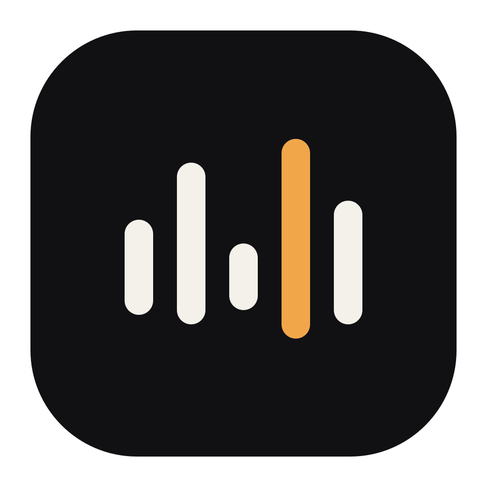

Arrival
A planned sequence reaches the event that returns light; Uzume analyzes the whole performance, then makes its consequential cue visible.
Uzume
MythPerformance causes the return of light.
ProductA scored arc culminates in a planned transition.

1632
128
Uzume
Plan readyOpening sequence
One arc · five cues
6:30Establish
6:45Open
7:10Return
Semantic collision: equalizer.
Mitigation depends on the unequal starts, no shared baseline, and planned-sequence language.